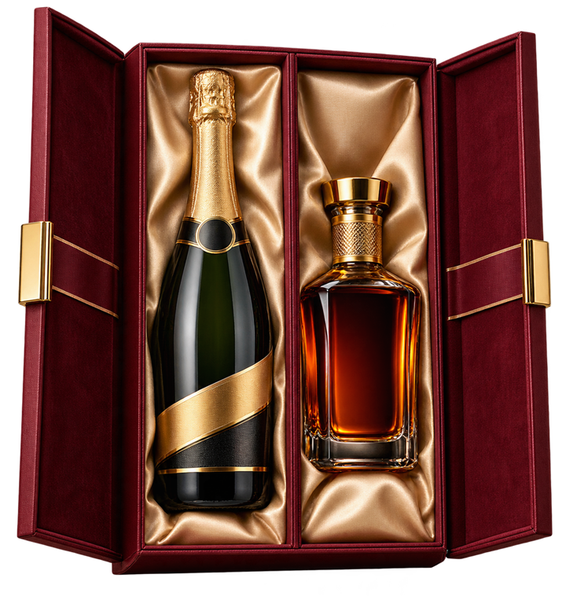
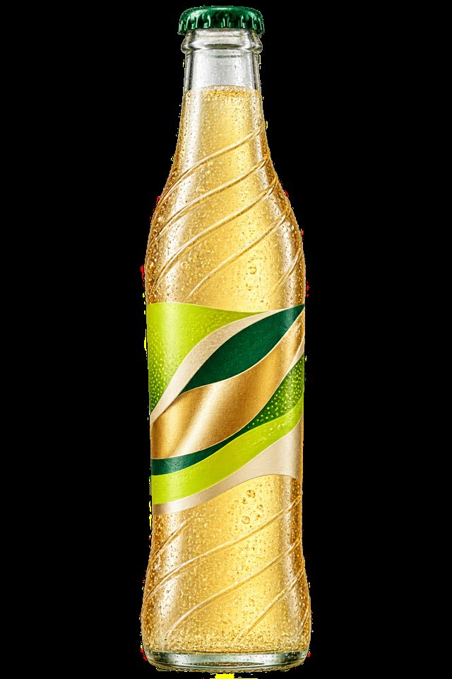

Choose the moment
Dinner, hosting, gifting, or the weekend.
Drinks worth opening, selected for Nigerian tables, soft landings and loud celebrations.

Slide 1 of 4: The Celebration Duo
The bottle should fit the room. Start with the reason everyone is gathering.
We organise drinks around how people actually gather—not an endless aisle of tiny decisions.
Read our point of viewDinner, hosting, gifting, or the weekend.
See what is ready where you are.
We make the final stretch feel effortless.

Ice, citrus, one good spirit and a mixer with enough character to do the work.
Read in four minutes